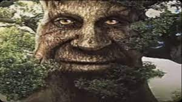
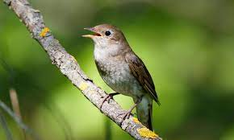

|  | сенс мему | роки життя мему | причини чому мені подобається мем |
| Як такого посилу нема. Спочатку картинки з мудрим деревом використвоувались в деяких рекламах ігор з фразою: "якщо вам більше 25 років,тоді ця гра для вас (на рахунок цього інформація не точна). Зараз це прості картинки з мудрим деревом з супроводом спокійною музикою |
роки перших прояви життя мему були 2000-ні роки та популярний і досі. | Він мудрий |
| сенс мему | роки життя мему | причини чому мені подобається мем | |
| В тіктоці було чимало відео,де була лише картинка з старим дідусем з надписом - "Віктор Корнеплід". Відео супроводжувалось дзвонами колоколів,повідомляючи про якусь катастрофу. Також були приколи по типу - "Віктор Корнеплід прийде через 12днів". Також існував мем "Анастасія Землерийка", яка є аналогом мему "Віктор Корнеплід". |
2021р.-кінець 2022р. | Віктор Корнеплод |
|  | сенс мему | роки життя мему | причини чому мені подобається мем |
| Спочатку були лише меми в тіктоці,де висміювали сучасні реп-пісні людей, поки возвеличували "реп-пісні" птахів. В червні 2023 року мем став більш культовим та почали з'являтись меми про птахів-"реперів". Так з'явився мем про Soloway, а також 0real, P2h і т.п |
2023р.-2023р. так, як він протянув лише 3 тиждні | Птахи милі |